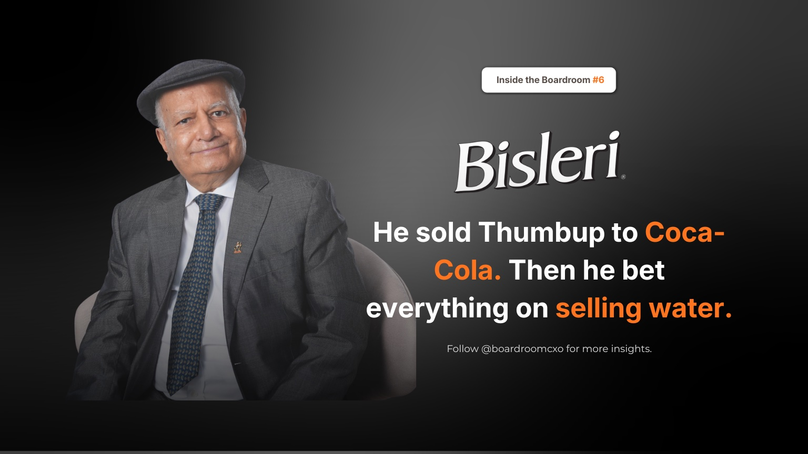

In 1993, Ramesh Chauhan sold the biggest soft drink brand in India. Thums Up. At its peak. To Coca-Cola.
Thums Up controlled close to 85% of the Indian cola market that year. Chauhan had built it himself in 1977, in the exact gap Coca-Cola left when it walked out of the country. For over a decade the brand was untouchable. Then liberalisation opened the doors again, the American giants came back, and they went straight after his bottlers with offers those partners could not refuse.
Chauhan ran the numbers. What he saw was a price war against balance sheets he could not match. So he sold, Thums Up, Limca, Gold Spot, Maaza, the entire stable, for around ₹186 crore.
Most operators take that outcome as a retirement plan. He read it as capital for a different fight.
The Part of the Story Everyone Skips
Bisleri was not a new idea for Chauhan. Parle had owned the brand since 1969, when it existed as a niche glass-bottle product sold to hotels and foreign visitors who did not trust Indian tap water. For over two decades it stayed a rounding error in the company's numbers, because no one in India was going to pay for something that came free from a municipal pipe.
What changed in 1993 was not the product. It was the amount of seriousness behind it.
Chauhan stopped running Bisleri as a side business the moment he had capital and no soft drink empire left to distract him. That distinction matters more than the founding story most retellings lead with. The brand existed for 24 years before anyone treated it like a real bet.
The Problem Nobody Wanted to Solve
Bottled water has a structural cost problem that cola does not. It is heavy, it is priced low per unit, and the margin on moving it is thin enough that most transporters would rather carry almost anything else. That single fact had kept water a marginal category in India for decades. It was not a demand problem. It was a logistics problem dressed up as a demand problem.
Chauhan's answer was to buy his own trucks and run distribution in-house.
A man who had just exited soft drinks ended up running a fleet that grew into thousands of vehicles.
That is not a marketing decision. It is an infrastructure decision, made by someone who understood that owning the unglamorous, low-margin, operationally painful part of a business is often the only way to actually own the category. Competitors who wanted to enter bottled water later had to either build the same logistics muscle from zero or rent it from someone, usually Bisleri's own network, at a price that protected the incumbent.
Where Most Leadership Playbooks Get This Wrong
The conventional read on Chauhan's move is "he saw water coming before everyone else." That is not quite right, and it is worth being precise about why.
Bisleri had existed since 1969. The opportunity was visible to anyone in Parle's leadership for two decades. What was missing was not foresight. It was a leader willing to solve a boring, capital-intensive, low-glamour operating problem instead of chasing a category that already had obvious demand.
This is the mistake founders make constantly when they raise a round or exit a business and go looking for "the next big thing." They search for a market that is already exciting instead of asking which unsexy operational bottleneck, if solved properly, would let them own a category outright. Chauhan did not discover thirst. He discovered that nobody had bothered to fix distribution economics for water, and that fixing it was worth more than any single product innovation.
He was not selling water. He was building a habit that did not exist, one truckload at a time.
What the Numbers Say Now
Today Bisleri International Pvt Ltd is dominant enough that Indians use the brand name as a generic term for bottled water, regardless of who made it. That is the rarest kind of market position a consumer brand can reach.
The company holds roughly a third of the organised bottled water market in India and posted ₹2,689 crore in revenue in FY24. In 2023, Chauhan turned down a reported ₹7,000 crore acquisition offer from the Tata Group and kept the business in the family.
He had already given up the number one brand in the country once. He was not doing it again on a category he had spent thirty years building from nothing.
The Boardroom Read
Every founder eventually faces a version of Chauhan's 1993 decision, though rarely with the stakes this large. A market leader position gets threatened by deeper pockets, and the instinct is to defend it at any cost, because that is the business everyone already understands and respects. Chauhan's actual insight was recognising that defending a position and building a category are two different jobs, requiring two different kinds of leadership discipline.
Defending Thums Up against Coca-Cola and Pepsi simultaneously would have meant years of price competition funded by a smaller balance sheet, a fight with a predictable, grinding outcome. Building Bisleri meant years of unglamorous infrastructure investment, trucks, route density, retailer relationships, with a payoff that was not guaranteed but was entirely his to define.
The safe move is rarely the one that builds an empire. What is less obvious is that the "safe" move and the "bold" move both require serious operational leadership. Chauhan did not walk away from FMCG discipline when he sold Thums Up. He redeployed it against a problem, distribution economics for a low-margin commodity, that most leadership teams would consider beneath a brand-building mandate. That willingness to run the boring part of the business personally, for decades, is the actual differentiator, not the timing of the water category call.
Frequently Asked Questions
Why did Ramesh Chauhan sell Thums Up to Coca-Cola?
After liberalisation in 1991, Coca-Cola and Pepsi returned to India and went straight after Chauhan's bottling network with offers his partners could not match. He judged it a price war against balance sheets far deeper than his own and chose to sell rather than fight it, taking Thums Up, Limca, Gold Spot, and Maaza to Coca-Cola in 1993 for around ₹186 crore.
How big was Thums Up when Ramesh Chauhan sold it?
Thums Up commanded close to 85% of the Indian cola market at the time of the sale. Chauhan had built it from scratch in 1977, in the gap Coca-Cola left when it exited India, and it stayed dominant for over a decade before liberalisation reopened the market to multinational competition.
Why did Bisleri take over two decades to become profitable?
Parle acquired Bisleri in 1969 as a niche glass-bottle product sold mainly to hotels and foreign visitors. For more than twenty years it stayed a side business because Indian consumers would not pay for something available free from a tap. It only scaled after 1993, when Chauhan committed the capital and distribution investment the category needed.
Why did Ramesh Chauhan build his own trucking fleet for Bisleri?
Bottled water is heavy relative to its price, which made third-party transporters reluctant to carry it profitably. Chauhan solved this by buying his own trucks and running distribution in-house, a decision that grew into a fleet of thousands of vehicles and became one of Bisleri's structural advantages over later entrants.
How large is Bisleri today?
Bisleri International Pvt Ltd holds roughly a third of India's organised bottled water market and posted revenue of ₹2,689 crore in FY24. The brand name is used generically by Indians to refer to bottled water regardless of manufacturer, a level of category ownership few Indian consumer brands have achieved.
Did Ramesh Chauhan sell Bisleri to the Tatas?
No. In 2023, Chauhan walked away from a reported ₹7,000 crore acquisition offer from the Tata Group and kept Bisleri under family ownership, choosing to continue running the business he had spent three decades building rather than exit at the peak.
What is the leadership lesson from Ramesh Chauhan's move from Thums Up to Bisleri?
The lesson is that defending a market position and building a category are different jobs requiring different leadership instincts. Chauhan gave up the safer role of protecting a dominant cola brand and instead spent decades solving the unglamorous operational problem, distribution economics, that was blocking an entire category from existing. Category creation rewards operators willing to own problems competitors consider beneath them.
Related Reading
Refused to Blink: The Boardroom Lesson Behind Marico's War With Hindustan Lever
Read → R · 02 Founder Leadership · August 2026Sunil D'Souza Turned Down Tata's FMCG Job, Then Built It From Tea and Salt
Read → R · 03 Founder Leadership · July 2026Sanjiv Mehta: The HUL Leader Who Never Forgot Bhopal
Read →Building the operator bench for a category nobody has proven yet?
Category creation runs on the unglamorous roles, distribution, ops, supply chain, as much as on brand. We place the leaders who can own the infrastructure problem, not just the pitch deck.
Brief Us on a Mandate